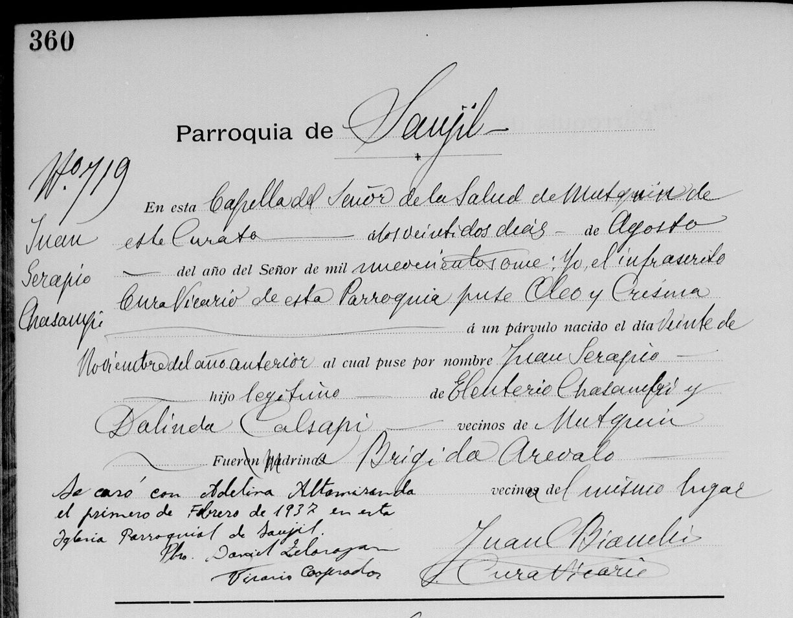

Raíces Chasampi
La historia del pueblo y del linaje de María Primitiva Chasampi, nacida en Mutquín el 7 de febrero de 1937. Más de mil años en el oeste de Catamarca, desde la cultura La Aguada hasta hoy.
El pueblo del departamento Pomán, en Catamarca, donde nació María Primitiva. Su nombre viene del quichua mutquy, que significa "olor".
El apellido y el linaje. Tiene raíz en el cacán, la lengua diaguita, y sus portadores se reconocen descendientes de un cacique.
De La Aguada a Mutquín
-
c. 600 – 900 d.C.
La cultura La Aguada
Es la raíz más antigua que se puede rastrear con cierta certeza en esta tierra. No fue un pueblo único ni un territorio político, sino una cultura compartida por comunidades de los valles de Catamarca, La Rioja y San Juan.
El nombre se lo pusieron los arqueólogos, por una pequeña localidad catamarqueña llamada La Aguada, donde se halló un cementerio de unas 200 tumbas con su cerámica característica.
- Hicieron una de las cerámicas más refinadas de la región: grabada y pintada en gris, negro y rojo.
- Su símbolo central era el felino, el jaguar, asociado al poder y a lo sagrado, muchas veces junto a figuras de guerreros.
- Trabajaron el cobre en placas con grabados rituales. Por sus figuras casi de dragón, a esta cultura también se la llama "Draconiana".
Antes hubo cazadores y recolectores durante miles de años, pero sin un rastro continuo que se pueda seguir hasta hoy.
-
c. 850 – 1480 d.C.
La cultura santamariana
Hacia el año 900 La Aguada se diluye, pero parte de su legado continúa en culturas más tardías. La principal es la santamariana, llamada así por el valle de Santa María, entre Catamarca y Salta.
- Su sello más conocido son las urnas funerarias donde enterraban a los niños, hoy presentes en grandes museos del mundo.
- Es el período de los Desarrollos Regionales: pueblos fortificados en altura, obras de riego y comunidades que empiezan a confederarse para defenderse.
Santa María y diaguita, ¿qué relación hay?
Son la misma gente vista de dos maneras. "Santa María" es el nombre arqueológico: el estilo de los objetos, las urnas, las ruinas. "Diaguita" es el nombre del pueblo vivo que dejó esos restos.
Pensalo así: si dentro de dos mil años unos arqueólogos encontraran mates y camisetas de fútbol y llamaran a eso "cultura rioplatense", esa gente igual se habría llamado a sí misma argentina y habría hablado español. La gente de la cultura santamariana era el pueblo diaguita.
-
Nación diaguita
Los diaguitas, el cacán y los calchaquíes
Los diaguitas eran un conjunto de pueblos independientes del noroeste argentino y el norte de Chile, unidos por una lengua común: el cacán. Fueron agricultores, ceramistas y guerreros.
"Diaguita" es una palabra quechua que significa "serrano". Se la pusieron los incas y después la difundieron los españoles.
Los calchaquíes eran una de las parcialidades, uno de los grupos, de la nación diaguita. La comunidad de Mutquín pertenecía a esa rama.
-
Siglo XV
Llegan los incas
El Imperio Inca se extendió sobre la región en el siglo XV. Los diaguitas resistieron, pero terminaron incorporados. Durante unos doscientos años se habló quichua en la zona, y de esa lengua viene el nombre de Mutquín.
-
Siglos XVI – XVII
La conquista española y la encomienda
Frente a los españoles, los diaguitas opusieron una resistencia feroz: las Guerras Calchaquíes duraron más de un siglo. Al terminar, los españoles impusieron la encomienda y el destierro.
Cómo funcionaba la encomienda
La Corona le daba a un español, el encomendero, un grupo de indígenas encabezados por su cacique. Quedaban obligados a pagarle un tributo en trabajo o en productos: maíz, trigo, tejidos, animales.
En teoría, el encomendero debía protegerlos y cristianizarlos. En la práctica fue un sistema de explotación, con trabajo forzado por temporadas (la mita) o de por vida (el yanaconazgo), y traslados de familias enteras por la fuerza.
El cacique quedaba en el medio: los españoles lo hacían responsable de entregar a su propia gente y de que se pagara el tributo.
-
Siglos XVII – XVIII
El cacique Juan Mateo Chasampi
Un cacique era el jefe de su comunidad: repartía la tierra y el agua de riego, que en esa zona árida era vital, resolvía conflictos y guardaba las costumbres del pueblo. Bajo la encomienda podía ser un instrumento de los españoles o usar su lugar para proteger a los suyos.
Juan Mateo Chasampi eligió proteger a los suyos.
El encomendero Cuba Palacio se había llevado tierras y familias de la comunidad a Colpes. Juan Mateo Chasampi fue responsable, junto con otros, de recuperarlas. Convirtió un cargo pensado para someter en una herramienta de resistencia, y por eso el pueblo de Mutquín le rinde homenaje.
Hasta dónde llega la memoria escrita
De él hacia atrás no hay registros accesibles. Los pueblos originarios no escribían, y un cacique aparece en los papeles coloniales solo cuando los españoles tuvieron motivo para nombrarlo. Juan Mateo Chasampi es el antepasado más antiguo de esta rama que se conoce con nombre y apellido. Antes de él hay pueblo y cultura, pero ya no personas con nombre.
-
c. 1888 – 1897
Las dos parejas de Mutquín
Hacia fines del siglo XIX nacen en Mutquín los cuatro bisabuelos de María Primitiva. Sus años salen de las edades que declararon en 1937, así que son aproximados.
- Eleuterio Chasampi y Dalinda Calsapi, ella nacida hacia 1888. Eleuterio murió antes de 1937.
- Agustín Altamiranda, nacido hacia 1889 y labrador, y Ramona Chasampi, nacida hacia 1897.
Las dos parejas estaban casadas por la Iglesia: los libros de Saujil anotan a sus hijos como "legítimos".
-
1910 – 1913
Nacen Juan Serapio y Adelina
Juan Serapio Chasampi nace el 20 de noviembre de 1910, hijo de Eleuterio y Dalinda. Lo bautizan el 22 de agosto de 1911 en la Capilla del Señor de la Salud de Mutquín. Su madrina fue Brígida Arévalo.
Ramona Adelina Altamiranda nace el 17 de noviembre de 1912, hija de Agustín y Ramona. La bautizan el 23 de enero de 1913 en la capilla de Pomán.
Las dos partidas las firma el mismo cura vicario de Saujil, Juan C. Bianchi.
Parroquia de Saujil · partida 719 · 1911"...al cual puse por nombre Juan Serapio, hijo legítimo de Eleuterio Chasampi y Dalinda Calsapi, vecinos de Mutquín."

Bautismo de Juan Serapio, partida 719. Al margen, la nota de su casamiento en 1937. 
Bautismo de Ramona Adelina, partida 128. Tocá cualquier acta para verla entera. Chasampi por los dos lados
La madre de Adelina también era Chasampi. Por eso María Primitiva lleva el apellido por la rama de su padre y por la de su madre.
-
1 de febrero de 1937
El casamiento en Saujil
José Serapio Chasampi, de 26 años y labrador, se casa con Adelina Altamiranda, de 24. El mismo día se casan ante el Registro Civil de Saujil, con Pedro A. Carrizo como jefe del registro, y en la Iglesia Parroquial de Saujil, ante el presbítero David Zelarayán.
Fueron testigos José Zenón Chasampi, albañil, Juan Tomás Solohaga, Domingo Caliva y Azarías Salazar, todos de Mutquín.

Acta 3, folio 22: los novios y sus padres. 
La continuación: testigos y firmas. Un nombre, dos versiones
En los papeles de la Iglesia él figura como Juan Serapio y en el Registro Civil como José Serapio. Con el padre de Adelina pasa lo mismo: José en el bautismo, Agustín en el casamiento. Era común usar uno u otro de los nombres de pila.
-
7 de febrero de 1937
Nace María Primitiva Chasampi
Seis días después del casamiento de sus padres, Juan Serapio y Adelina, nace en Mutquín. Después vendrían sus hermanas Norma e Isabel.
Descendiente del cacique Chasampi, con ella esta historia de más de mil años llega a la familia Sola.
-
Hoy
Una identidad que sigue viva
Los descendientes de Mutquín rechazan que a su comunidad se la llame "pueblo de indios" y reivindican más de 1.400 años de antigüedad, según la cerámica de La Aguada hallada en la zona.
En los carnavales de Mutquín todavía salen las comparsas Diaguita y Calchaquí, con sus coplas, sus trajes y sus hombres-pájaro.
Del cacique a hoy
De dónde sale cada dato
Documentos de la familia
- Bautismo de Juan Serapio Chasampi. Parroquia de Saujil, libro de bautismos, página 360, partida 719, 1911. Imagen en FamilySearch.
- Bautismo de Ramona Adelina Altamiranda. Parroquia de Saujil, página 69, partida 128, 1913. Imagen en FamilySearch.
- Matrimonio civil de José Serapio Chasampi y Adelina Altamiranda. Registro Civil de Saujil, departamento Pomán, 1937, acta 3, folio 22. Cortesía del Registro Civil de Catamarca, imagen en FamilySearch.
- Testimonio de Norma Esther Chasampi, octubre de 2026. Los nombres de sus padres.
Historia y contexto
- Gabriela de la Orden de Peracca, Pueblos indios de Pomán. Catamarca (siglos XVII a XIX). Buenos Aires, Dunken, 2006. Colpes, Mutquín y el cacique Chasampi.
- Cultura de la Aguada, Wikipedia. Fechas, ubicación y origen del nombre.
- "Aguada", Proyecto AbRiGo, UNTREF. Unidad cultural y expresiones regionales.
- "Réplicas de cerámica de la cultura de La Aguada", Arte cerámico precolombino. Cerámica, el felino y la metalurgia.
- Cultura santamariana, Wikipedia. Cronología y urnas funerarias.
- "Cronología de las culturas agroalfareras del noroeste argentino". Continuidad entre La Aguada, Belén y Santa María.
- Pueblo diaguita, Wikipedia. La lengua cacán y el origen del nombre.
- "Diaguita", Pueblos Originarios. Las Guerras Calchaquíes.
- "Las encomiendas en la Gobernación del Tucumán", Historia de Salta. La encomienda y el tributo.
- "Encomiendas y mitas", Historia Argentina, Gobernación de Tucumán. Mita y yanaconazgo.
- "No podemos permitir que nos sigan tratando con el apelativo que nos puso Colón", diario El Esquiú. El homenaje a Juan Mateo Chasampi y la recuperación de Colpes.
- "Pomán: descendiente de aborigen en contra de libro", blog Rincón, departamento Pomán. La posición de la comunidad diaguita de Pomán.
- "Comparsas de Mutquín. Coplas, color y ritual", diario El Esquiú. Las comparsas Diaguita y Calchaquí.